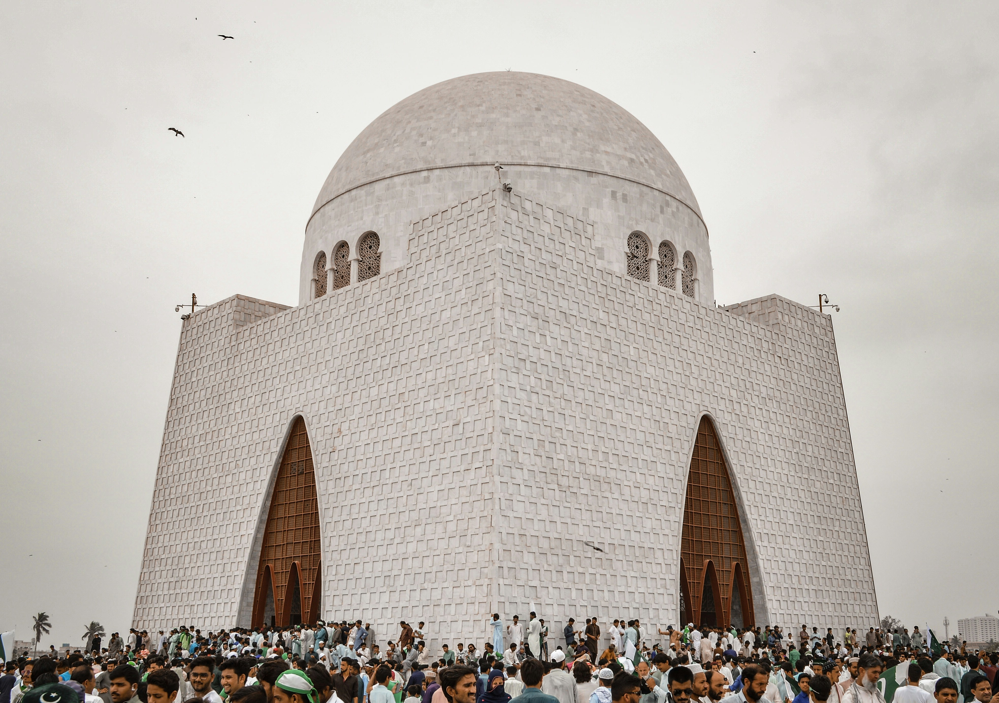
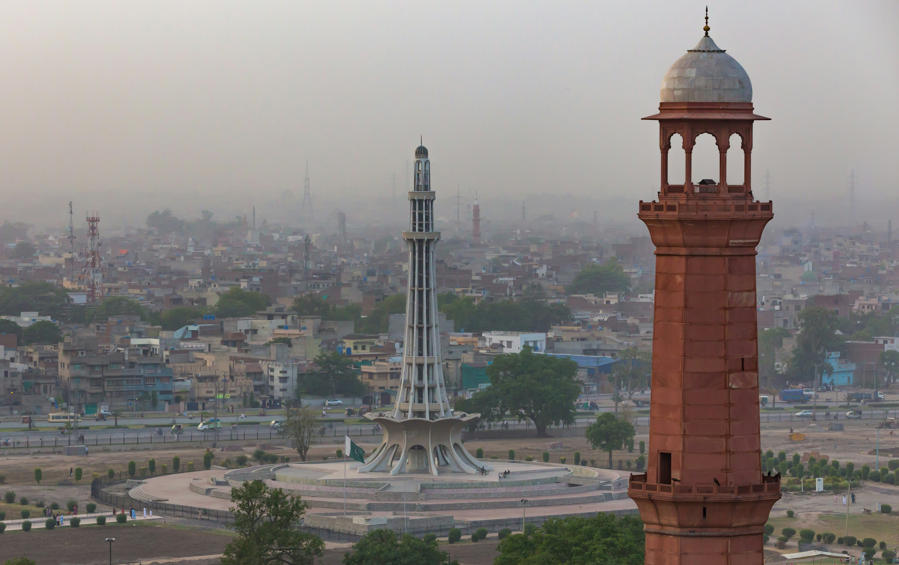

ABOUT PAKISTAN PK
Pakistan is a land of breathtaking beauty, from the mountains of Hunza to the vibrant streets of Karachi. Experience culture, history, and unforgettable adventures.



Pakistan is a land of breathtaking beauty, from the mountains of Hunza to the vibrant streets of Karachi. Experience culture, history, and unforgettable adventures.


Population: 16 million
Known for: Vibrant culture, food, beaches, and modern architecture
Karachi is the largest city in Pakistan with a rich maritime history. Enjoy the beautiful Arabian Sea coastline, historic monuments, and delicious street food.
Population: 1.8 million
Known for: Nature, hiking trails, Faisal Mosque, and serene beauty
The capital city of Pakistan, nestled at the foothills of the Margalla Hills. A perfect blend of modern development and natural beauty with excellent hiking opportunities.
Population: 11.7 million
Known for: History, mughal architecture, food, and gardens
The heart of Punjab, Lahore is steeped in history and culture. From the magnificent Badshahi Mosque to the stunning Lahori cuisine, it's a city that captivates every visitor.